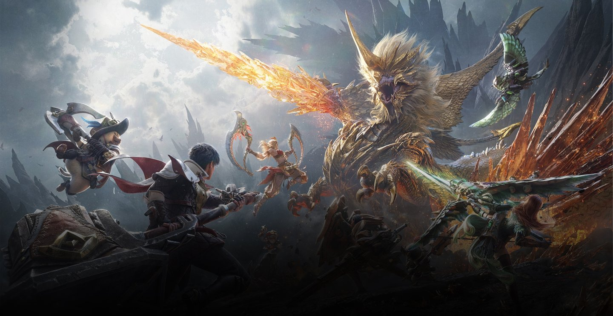
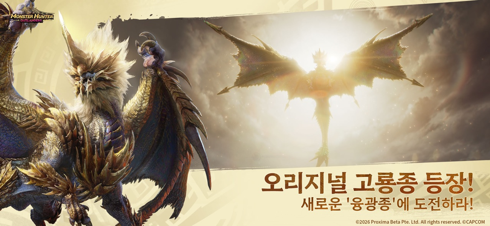
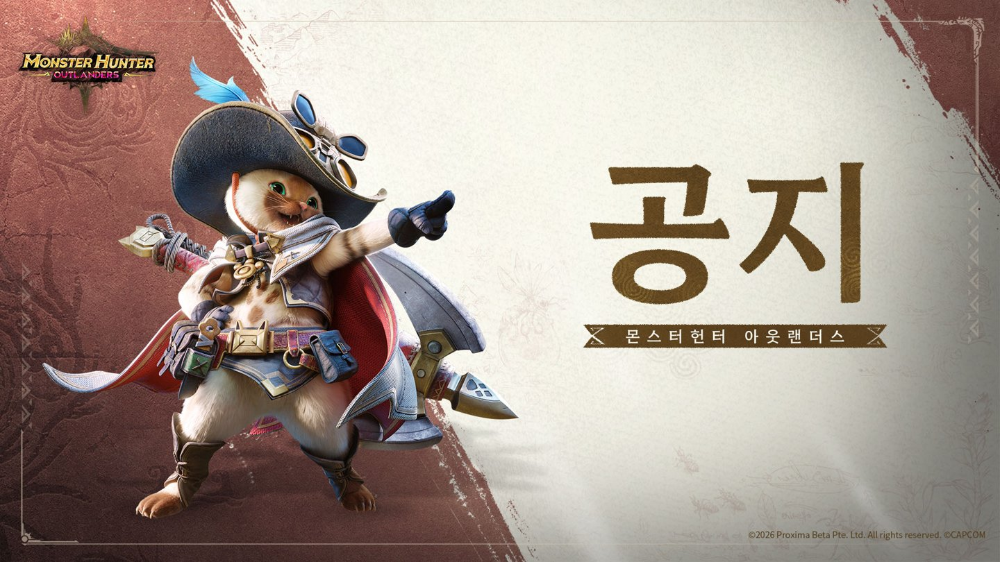

몬스터헌터 아웃랜더스 PC 하는 법, 공식 PC판 유무와 에뮬레이터 현실
10월 29일 오전 7시에 몬스터헌터 아웃랜더스가 열리자마자 큰 모니터로 사냥하는 그림부터 그렸다가, 공식 FAQ와 스토어 페이지를 열어 보고 멈칫했어요. 'PC로는 못 하나' 싶어서 한참 들여다봤는데요, 결론부터 말씀드리면 공식 PC 버전은 없고, 에뮬레이터로 돌리는 길은 있지만 공식이 안내하는 방식은 아니에요. 오늘은 그 경계가 어디까지인지, 그리고 폰으로 시작할 때 챙길 사양과 계정 이야기를 한 번에 정리해 볼게요.

정식 출시에 맞춰 공식 홈페이지에 걸린 키비주얼이에요
이미지 출처: 몬스터헌터 아웃랜더스 공식 홈페이지(가레나)
몬스터헌터 아웃랜더스, PC 공식 버전이 있나요?
몬스터헌터 아웃랜더스는 공식 PC 클라이언트 없이 Android와 iOS 모바일 전용으로 나온 게임이에요. 한국 서비스는 가레나가 맡았고, 캡콤 IP 라이선스와 감수 아래 티미 스튜디오 그룹이 개발한 '서바이벌 헌팅 액션 모바일 게임'으로 소개돼요. 서버는 2026년 10월 29일(목) 오전 7시(UTC+9)에 안드로이드와 iOS에서 동시에 열렸고, 사전 다운로드는 하루 전인 10월 28일(수) 낮 12시부터 풀렸답니다.
- 가레나가 서비스하고, 구글 플레이와 애플 앱스토어에 동시에 출시됐어요.
- 서버는 대한민국·아시아태평양·라틴아메리카·중동아프리카 4개이고, 접속 지역을 기준으로 자동 연결돼요.
- 무기는 대검·태도·쌍검·해머·랜스·차지액스·활·헤비보우건 8종이 나와요.
- 최대 4인 협동으로 즐길 수 있어요.
내 폰으로 돌아갈까요, 사양과 용량은 얼마나 필요한가요?
공식 FAQ(10월 29일 기준)에서 밝힌 최소 사양은 Android 9 이상·RAM 4GB·저장 공간 19GB, iOS 15 이상·RAM 3GB·저장 공간 18GB예요. 권장 사양은 아래 표처럼 한 단계 위로 잡혀 있고, 특히 Android 권장 저장 공간이 22GB라 꽤 크네요. 폰이 아슬아슬하다면 권장 칸과 먼저 비교해 보시는 게 좋아요.

한국 앱스토어 페이지에 올라온 홍보 이미지예요. 같은 페이지의 정보 칸에는 크기 3.5GB와 iOS 15.0 이상 요구가 적혀 있고, iPhone·iPad·iPod touch가 호환 기기로 나와요
이미지 출처: Apple App Store 한국 · 몬스터헌터 아웃랜더스
| 구분 | Android | iOS |
|---|---|---|
| 최소 OS | Android 9 이상 | iOS 15 이상 |
| 최소 RAM / 저장 공간 | 4GB / 19GB | 3GB / 18GB |
| 권장 OS | Android 12 이상 | iOS 17 이상 |
| 권장 RAM / 저장 공간 | 8GB / 22GB | 6GB / 20GB |
사전 다운로드 때 클라이언트 용량은 Android 약 16GB, iOS 약 20GB로 알려졌는데요, 공식 권장 저장 공간이 Android 22GB·iOS 20GB라서 Android는 22GB, iOS는 20GB 이상 비워 두시는 걸 권해요. 앱스토어에는 초기 크기 3.5GB로 뜨는데 사전 다운로드 용량과 차이가 커서, 설치 뒤에 게임 안에서 데이터를 더 받는 구조로 보여요. 저장 공간이 최소 기준에 겨우 걸치는 폰이라면 설치 전에 사진과 앱부터 정리하시고, 권장 기준을 넉넉히 넘는 폰이라면 바로 설치하셔도 돼요.
내 폰 스토어에서 이 두 칸을 보면 설치 가능 여부가 바로 나와요
PC에서 굳이 하려면 에뮬레이터는 괜찮을까요?
PC에서 하려면 BlueStacks나 MuMuPlayer 같은 서드파티 에뮬레이터로 모바일 앱을 돌리는 방법이 흔히 쓰이는데, 이건 가레나가 안내하는 방식이 아니에요. 공식 FAQ는 이렇게 적어 두었습니다.
"모바일 기기에서 플레이할 수 있도록 개발되었으며, 모바일 기기가 아닌 다른 환경에서 이용 시 발생하는 문제에 대해서는 도움을 드리기 어렵습니다."
PC나 에뮬레이터를 지원한다거나 하지 않는다고 못 박은 건 아니고, 모바일이 아닌 환경에서 생기는 문제는 도움 드리기 어렵다는 쪽으로 적어 둔 거예요.

인용한 문구는 공식 FAQ 공지에 실려 있어요. 위 배너는 그 공지 페이지 상단에 걸린 이미지예요
이미지 출처: 몬스터헌터 아웃랜더스 공식 FAQ(가레나)
설치 흐름은 BlueStacks 쪽 설명으로는 이래요. 게임 전용 안내 페이지와 설치 가이드를 두고 있고, 에뮬레이터 자체 요구 사양으로 Windows 7 이상·RAM 4GB 이상·여유 저장 공간 10GB(게임 용량은 별도)에 관리자 권한을 적어 둬요. 구글 플레이에 로그인한 뒤 게임을 설치하는 순서이고, MuMuPlayer도 한국어 안내 페이지를 따로 두고 있답니다. 저는 에뮬레이터로 직접 설치해 돌려 보지는 못해서 프레임이나 키 매핑이 어떤지는 말씀드릴 수 없어요. 해외 매체 포켓게이머는 화면이 매끄럽지 않을 수 있다고 했고, 개발사가 계정을 정지할 수도 있으니 자기 책임으로 하라고 적었는데요, 이건 매체의 의견이지 약관 문구는 아니에요.
이용 규약에서 에뮬레이터와 관련된 부분
- 10월 29일자 이용 규약은 핵·불법 플러그인·스크립트·스피드핵·마우스 매크로 같은 제3자 도구나 자동화 프로그램으로 부당한 이득을 얻는 행위를 부정행위로 규정해요.
- 비공식 경로의 설치 파일이나 변조·크랙 클라이언트로 로그인하는 행위도 금지라서, 설치는 스토어 경로로 하는 게 안전해요.
- 제재는 게임 이용 제한 1일부터 10년까지 단계가 있고, 채팅 제한은 1시간~7일이며, 극히 악의적이면 관련 기기도 차단될 수 있어요.
- 규약에 '에뮬레이터'라는 단어는 없고, 금지한다는 말도 허용한다는 말도 FAQ와 이용 규약 어디에도 안 나와요. 규약이 상세 운영정책은 공식 커뮤니티에서 보라고 안내하는데, 그쪽 내용은 저도 아직 못 봤어요.
그래서 에뮬레이터 자체가 제재 대상인지는 공식 기준으로는 알 수 없고, 마우스 매크로나 자동화 프로그램은 규약에 이름이 올라 있다는 게 확실한 선이에요. 저라면 에뮬레이터의 매크로 기능은 건드리지 않겠습니다.
계정은 뭘로 연동하고, 기기를 바꿔도 이어서 할 수 있나요?
계정은 플랫폼마다 로그인 수단이 조금 달라서 표로 묶어 봤어요.
| 구분 | 로그인 수단 |
|---|---|
| Android | Google · Facebook · Garena · Guest |
| iOS | Apple · Google · Facebook · Garena · Guest |
| Guest (공통) | 로그아웃·게임 삭제·기기 변경 때 진행 정보 보존 불가, 계정을 잃어도 복구 도움 불가 |
Guest는 계정을 잃어도 복구 도움을 받을 수 없다고 FAQ가 못 박고 있거든요. 폰이든 에뮬레이터든 시작하자마자 연동부터 해 두는 게 좋겠죠?
다른 기기에서도 같은 계정으로 이어서 할 수 있지만 동시 접속은 안 돼요. Android와 iOS 사이로 옮기는 경우를 따로 적은 항목은 FAQ에 없지만, 두 OS에 공통인 Google·Facebook·Garena로 연동해 두는 쪽이 낫겠죠. PC와의 크로스플레이도 FAQ에는 따로 적힌 내용이 없습니다.
자주 묻는 질문
Q. 컨트롤러로 할 수 있나요?
가레나 보도자료에 따르면 정식 출시부터 사냥·임무 수행·필드 탐색 등 일부 콘텐츠에서 컨트롤러 조작을 지원하고, 앞으로 범위를 넓힐 예정이라고 해요. 모든 콘텐츠가 되는 건 아니고, 어떤 패드가 되는지는 공개된 목록이 없어요.
Q. 글로벌판 앱을 깔아도 되나요?
권하지 않아요. 한국판은 가레나의 com.garena.game.mho이고, 글로벌판은 Level Infinite의 com.tencent.mhadv로 따로 올라와 있는 별개 앱인데, 한국 FAQ의 사양·서버 안내가 글로벌판에도 그대로 적용되는지는 공식 안내로 확인되지 않거든요. 이 글의 내용은 모두 한국판 기준이니 한국판을 설치하시는 쪽이 안전해요.
Q. 다른 지역 서버 친구와 같이 할 수 있나요?
서버 간 캐릭터 이전도, 다른 서버의 파티·친구도 불가능해요. 친구와 같이 하실 거라면 처음부터 같은 지역 서버에서 시작하는지 맞춰 두셔야 해요.
Q. 사전예약 보상은 언제 받나요?
상시 모집권·제니·프라임 베리·하늘색 이슬 같은 선물은 정식 오픈 후 우편함으로 지급돼요. 출시 기념으로는 최대 400회 모집에 해당하는 보상과 SSR 모험가 엔쇼우·루카, SSR 동반자 코지로가 풀렸고, '사냥의 유대' 이벤트는 11월 30일까지 이어져요.
몬스터헌터 아웃랜더스 PC 정리
큰 화면이 꼭 필요한 게 아니라면 폰으로 시작하는 쪽이 가장 탈이 없어요. 폰으로 시작하신다면 사양 표부터 확인하시는 걸 추천드리고, 그래도 PC로 가신다면 매크로 기능은 꺼 두고 설치는 스토어 경로로 하시는 게 좋아요. 에뮬레이터는 공식 안내 밖이라 본계정에 쓸지는 각자 판단하셔야 해요. 가레나의 안내가 출시 직후라 바뀔 수 있으니 이 글은 10월 29일 기준으로 봐 주세요. 몬헌 좋아하시는 분들, 즐겁게 사냥 달려 봅시다~
참고한 곳 (2026.10.29 기준)
· 몬스터헌터 아웃랜더스 공식 FAQ
· 몬스터헌터 아웃랜더스 이용 규약
· 몬스터헌터 아웃랜더스 공식 홈페이지
· 구글 플레이 한국 · 몬스터헌터 아웃랜더스(가레나)
· Apple App Store 한국 · 몬스터헌터 아웃랜더스
· 구글 플레이 · Monster Hunter Outlanders(Level Infinite 글로벌판)
· 가레나 보도자료(케이벤치)
· 경향게임스 출시 기사
· 사전예약 보상 기사(AP신문)
· 포켓게이머 · 에뮬레이터와 컨트롤러
· BlueStacks 설치 안내
· MuMuPlayer 한국어 안내